Toriel é uma cabra branca, a guardiã das Ruínas em Undertale, ex-Rainha do Subsolo e ex-esposa de Asgore, que se isolou após a morte dos seus filhos, Asriel e o primeiro humano que adotou, para proteger os humanos que caem lá, agindo como uma figura materna, acolhendor e protetora, mas com um temperamento forte quando necessário, usando magia de fogo e preparando tortas de caramelo e canela para o protagonista.
Papyrus é um personagem carismático e otimista de Undertale, irmão de Sans, que sonha em se tornar um membro da Guarda Real capturando um humano, mas é amável e inocente, criando quebra-cabeças na floresta de Snowdin para isso; ele é um chefe de jogo que, apesar de querer capturar o protagonista, acaba formando uma amizade com ele e oferece um encontro romântico, mostrando grande lealdade e cuidado pelo irmão.
Sans é um esqueleto preguiçoso e bem-humorado de Undertale, conhecido por suas piadas e por ser um personagem de apoio, mas que se torna o chefe mais difícil e perigoso na rota genocida, desafiando o jogador por suas ações, usando magia e revelando um passado misterioso ligado ao cientista W.D. Gaster e à determinação, sendo um adversário formidável que testa os limites do jogo e do próprio jogador.
Undyne é um monstro-peixe guerreira, líder da Guarda Real em Undertale, conhecida por sua força, determinação e personalidade explosiva, sendo uma heroína para muitos, mas temida como caçadora de humanos, especialmente por sua habilidade em usar lanças mágicas e sua determinação inabalável, que a torna quase imparável, sendo treinadora de Papyrus e uma figura inspiradora.
Alphys é a Cientista Real tímida, insegura e nerd de Undertale, apaixonada por anime e mangá, que guia o protagonista pelo Subsolo através de câmeras enquanto esconde suas inseguranças e culpa, sendo responsável indiretamente por Flowey e os Amálgamos, um mistério revelado no Verdadeiro Laboratório, e tem um amor não correspondido por Undyne, com quem forma um relacionamento na Rota Pacifista.
